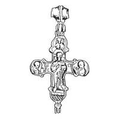
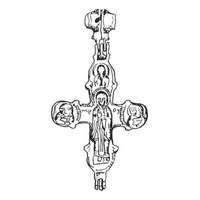

Catalog › CE-0945 · KOR2003-II.3.2.4
Encolpion întreg cu inel bitronconic cu două valve, Hristos Pantocrator, relief înalt
sec. XII–XIII (1101–1300) · Slobodka Zaleșcițkogo, regiunea Ternopil, Ucraina · Muzeul Regional de Studii Locale din Ternopil (TKM), inv. А 6801
double-sided reliquary cross (enkolpion), aramă; c. XII–XIII (1101–1300); found at Slobodka Zaleșcițkogo, regiunea Ternopil, Ucraina; kept at Muzeul Regional de Studii Locale din Ternopil (TKM).




Identificare
- Categorie
- Encolpion bivalv (relicvar)
- Material
- Aramă
- Tehnică
- Turnare în relief
- Stare
- Întreagă
- Dimensiuni
- Î 60 × L 52 mm
Iconografie
- Avers
- Hristos Pantocrator
- Descriere avers
- Toate imaginile în relief înalt; câmpul ornamental de la picioarele lui Hristos Pantocrator, din linii drepte încrucișate oblic, trasate adânc.
- Revers
- Neidentificat
- Descriere revers
- Se remarcă imaginile foarte grosolane, în comparație cu celelalte, ale sfinților (evident războinici, după veșminte asemănătoare unor mantale) din medalioanele laterale ale valvei de revers, cu capete și trăsături ale feței disproporționat de mari.
- Inscripții
- IC C[X] (față); МР ΘΥ (revers)
- Limba
- Greacă
Datare și atribuire
- Datare
- sec. XII–XIII (1101–1300)
- Centru
- Necunoscut
- Tipologie
- Korzukhina–Peskova 2003, tip II 3 2
Descoperire
- Localitate
- Slobodka Zaleșcițkogo
- Regiune
- regiunea Ternopil
- Țară
- Ucraina
- Context
- Descoperire izolată
- Anul
- 1993
Păstrare și referințe
- Colecție
- Muzeul Regional de Studii Locale din Ternopil (TKM)
- Nr. inventar
- А 6801
- Bibliografie
- G. F. Korzukhina, A. A. Peskova, Древнерусские энколпионы. Нагрудные кресты-реликварии XI–XIII вв., Sankt-Petersburg, 2003 [Korzukhina–Peskova 2003], p. 95, cat. nr. II 3 2/4, reprodusă la Табл. 44 (planșe, p. 286).
- Figura
- Табл. 44
- Planșe
- Korzukhina–Peskova 2003, Табл. 44 (planșă fără paginație proprie în PDF; p. 286 tipărită)
- Observații
- Datare după Peskova: sec. XII–XIII. Circumstanțe: Descoperire întâmplătoare, 1993, pe o gospodărie privată. Inel de agățare bitronconic cu două valve. Lectura inscripției de pe față (IC C[X]) de verificat pe original. Coordonate: nu sunt date în sursă.
Citare: Corpus Encolpiorum, CE-0945, Encolpion întreg cu inel bitronconic cu două valve, Hristos Pantocrator, relief înalt, https://vitaliejosanu1979-ux.github.io/primul-meu-proiect/piese/KOR2003-II.3.2.4/ (accesat 2026-10-17).